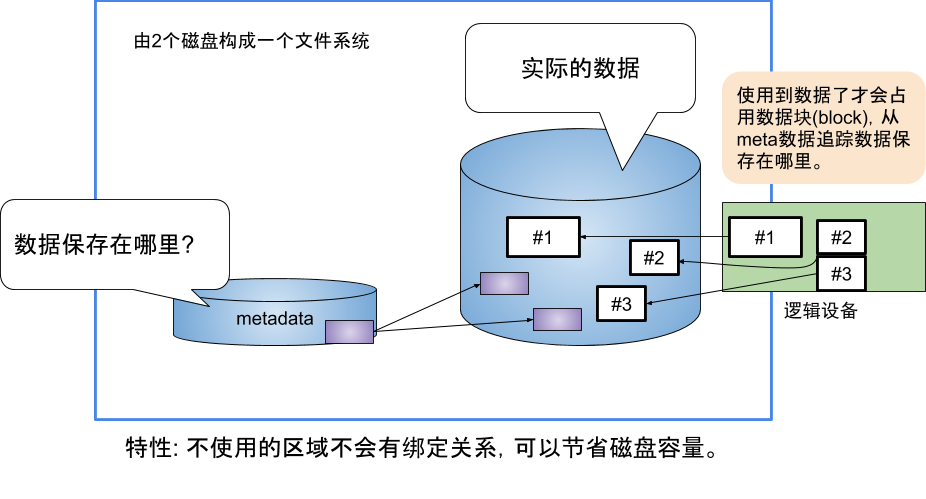
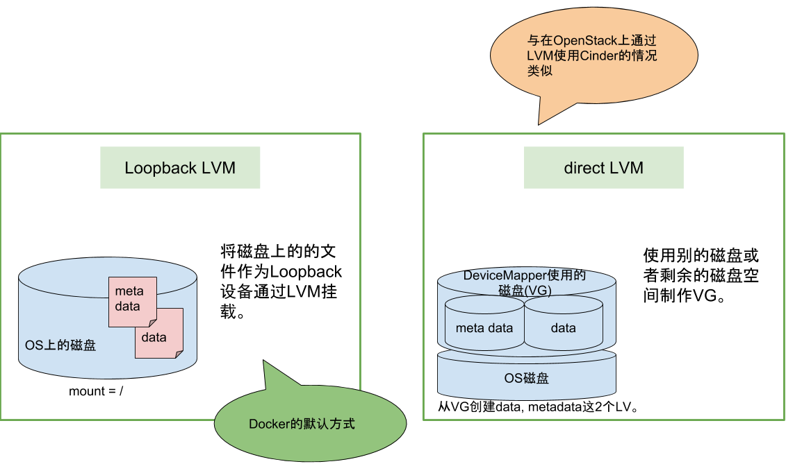
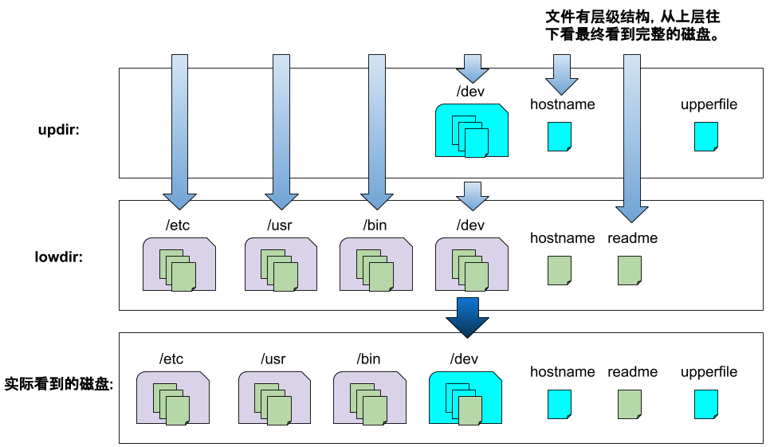

目的
调查 Docker 的文件系统
有哪些文件系统。
- 关于文件系统。
- 有什么特征。
介绍 Docker 分层文件系统概念。
首先应该想到的是 aufs。
aufs 已经是比较古老的了。
实际上有以下集中类型可供使用。
| 存储驱动 | 支持的文件系统 |
|---|---|
| overlay, overlay2 | xfs, ext4 |
| devicemapper | direct-lvm, loopback-lvm |
| aufs | xfs, ext4 |
| btrfs | btrfs |
| zfs | zfs |
| vfs | 其他文件系统 |
- 关于各种存储驱动的应用场景，可以参考官方文档Suitability for your workload。
注: aufs 在 Fedora、CentOS 上没有被支持。
默认的文件系统是什么？
目前官方推荐 overlay2 ，如果 OS 支持，在首次安装 Docker 便会采用此文件系统。以前有过默认采用 aufs 的年代，如果已经安装了 Docker 并使用 aufs，更新版本时仍会使用。
如何查看当前使用的storage driver？
docker info$ docker info Containers: 34 Running: 16 Paused: 0 Stopped: 18 Images: 13 Server Version: 18.09.4 Storage Driver: overlay2 Backing Filesystem: xfs Supports d_type: true Native Overlay Diff: true Logging Driver: json-file Cgroup Driver: systemd
DeviceMapper
DeviceMapper 由2个磁盘构成，分别是 metadata 和 data。
拥有 Thin-Provisioning 功能。

DeviceMapper 与 LVM 的关系
DeviceMapper 使用 LVM。
- Direct LVM
- Loopback LVM
有以上2种方式。
mount 方式不一样。

OverlayFS
- OverlayFS是什么?
- lowerdir: 作为基层的目录
- upperdir: 覆盖在基层状态目录上的目录
由以上部分组成，创建成如下的镜像:

为什么要分层?
Docker 在设计时，就充分利用 Union FS 的技术，将其设计为分层存储的架构。镜像实际是由多层文件系统联合组成。
镜像构建时，会一层层构建，前一层是后一层的基础。每一层构建完就不会再发生改变，后一层上的任何改变只发生在自己这一层。
比如，删除前一层文件的操作，实际不是真的删除前一层的的文件，而是仅在当前层标记为该文件已删除。在最终容器运行的时候，虽然不会看到这个文件，但是实际上该文件会一直跟随镜像。因此，在构建镜像的时候，需要额外小心，每一层尽量只包含该层需要的添加的东西，任何额外的东西应该在该层构建结束前清理掉。
分层存储的特征还使得镜像的复用、定制变得更为容易。甚至可以用之前构建好的镜像作为基础层，然后进一步添加新的层，以定制自己所需的内容，构建新的镜像。
如何看分层?如何看分层复用?
# pull a new image
$ docker pull busybox
Using default tag: latest
latest: Pulling from library/busybox
fc1a6b909f82: Pull complete
Digest: sha256:954e1f01e80ce09d0887ff6ea10b13a812cb01932a0781d6b0cc23f743a874fd
Status: Downloaded newer image for busybox:latest
$ clear
$ ls -lht
总用量 12K
drwx------. 3 root root 30 4月 13 16:05 289e5e2a228b1ff909050212126a2fa99dd6f2665134a19770e5b7eea50b2e86
drwx------. 2 root root 8.0K 4月 13 16:05 l
# be aware of 'docker/overlay2/l' is recording image layers' connection
$ pwd
/var/lib/docker/overlay2/l
$ ls -lht | head -n5
总用量 0
lrwxrwxrwx. 1 root root 72 4月 13 16:38 HN6VUXSR7NBMXZW37AIXRTEUTM -> ../7b36dab9d59a60efcd4a3995971ad062a25e6a390bf3f3e897292d53503a466d/diff
lrwxrwxrwx. 1 root root 77 4月 13 16:38 Y4QZHPBVBNBITRHGYYVM5TDHDY -> ../7b36dab9d59a60efcd4a3995971ad062a25e6a390bf3f3e897292d53503a466d-init/diff
lrwxrwxrwx. 1 root root 72 4月 13 16:38 V6CDQKWZHYWB5JVR5DVERURLCD -> ../202659682f2b0823d72cd8316717bbfd494dee22e85efd092d782d3927b04fed/diff
lrwxrwxrwx. 1 root root 77 4月 13 16:38 LCXZSOCIBLIKGLXHDKQV52ZKXG -> ../202659682f2b0823d72cd8316717bbfd494dee22e85efd092d782d3927b04fed-init/diff
$
# let's check out what is in busybox image's filesystem
$ pwd
/var/lib/docker/overlay2/289e5e2a228b1ff909050212126a2fa99dd6f2665134a19770e5b7eea50b2e86
$ ls -lh
总用量 4.0K
drwxr-xr-x. 10 root root 96 4月 13 16:05 diff
-rw-r--r--. 1 root root 26 4月 13 16:05 link
$ cd diff
$ ls -lh
总用量 16K
drwxr-xr-x. 2 root root 12K 4月 2 12:32 bin
drwxr-xr-x. 2 root root 6 4月 2 12:32 dev
drwxr-xr-x. 3 root root 79 4月 2 12:33 etc
drwxr-xr-x. 2 65534 65534 6 4月 2 12:32 home
drwx------. 2 root root 6 4月 2 12:32 root
drwxrwxrwt. 2 root root 6 4月 2 12:32 tmp
drwxr-xr-x. 3 root root 18 4月 2 12:32 usr
drwxr-xr-x. 4 root root 30 4月 2 12:32 var
$ cd usr
$ ls -lh
总用量 0
drwxr-xr-x. 2 bin bin 6 4月 2 12:32 sbin
$
# build my image
$ docker build -t go-server-9860 .
Sending build context to Docker daemon 7.311MB
Step 1/5 : FROM busybox
---> af2f74c517aa
Step 2/5 : MAINTAINER https://github.com/aruruka
---> Running in f50d07d89177
Removing intermediate container f50d07d89177
---> d02fd95709de
Step 3/5 : COPY server_9860 /usr/local/bin/
---> 94f0965b4ce9
Step 4/5 : WORKDIR /usr/local/bin/
---> Running in f0afc045a941
Removing intermediate container f0afc045a941
---> cc90efd3c240
Step 5/5 : ENTRYPOINT ["server_9860"]
---> Running in 51ca3dd962ec
Removing intermediate container 51ca3dd962ec
---> 2f31d1b7c458
Successfully built 2f31d1b7c458
Successfully tagged go-server-9860:latest
# check out upper layer's contents
# layer link info is in 'lower' file
$ pwd ; ls
/var/lib/docker/overlay2/1fbb0c7d6b69db147dea4de13b70dad9cc2c98536869c3a53082ad961836403d
diff link lower work
$ cat lower
l/UFX72NO2WA4Y7EELEHYCA6YXNZ$
# newer file will be in 'diff' dir
$ pwd
/var/lib/docker/overlay2/1fbb0c7d6b69db147dea4de13b70dad9cc2c98536869c3a53082ad961836403d/diff/usr/local/bin
$ ls -lh
总用量 7.0M
-rwxrwxr-x. 1 root root 7.0M 4月 13 16:23 server_9860
$
# use docker history command to verify image content
$ docker images | sed -n '1p;/go-server/Ip'
REPOSITORY TAG IMAGE ID CREATED SIZE
go-server-9860 latest 2f31d1b7c458 24 hours ago 8.51MB
$ docker history go-server-9860
IMAGE CREATED CREATED BY SIZE COMMENT
2f31d1b7c458 24 hours ago /bin/sh -c #(nop) ENTRYPOINT ["server_9860"] 0B
cc90efd3c240 24 hours ago /bin/sh -c #(nop) WORKDIR /usr/local/bin/ 0B
94f0965b4ce9 24 hours ago /bin/sh -c #(nop) COPY file:f7a8106426c88c00… 7.31MB
d02fd95709de 24 hours ago /bin/sh -c #(nop) MAINTAINER https://github… 0B
af2f74c517aa 11 days ago /bin/sh -c #(nop) CMD ["sh"] 0B
<missing> 11 days ago /bin/sh -c #(nop) ADD file:6051b0ebe4098ccbb… 1.2MB
$容器层
# run a container by the image I just build and observe filesystem's change
$ docker run -d --name go-server-9860 -p 127.0.0.1:9860:9860/tcp --rm go-server-9860
[root@lab-01 1fbb0c7d6b69db147dea4de13b70dad9cc2c98536869c3a53082ad961836403d]# mount | grep overlay
overlay on /var/lib/docker/overlay2/ee0374838eb0133ee43da57551c49ccd7b63eb04b9221d02e50c4966cdbae440/merged type overlay (rw,relatime,seclabel,lowerdir=/var/lib/docker/overlay2/l/ZEHVHEBBCDTTPJNQSCPZEU5MTC:/var/lib/docker/overlay2/l/7XHO5S33QZEIRZFKS4N4GZCPCO:/var/lib/docker/overlay2/l/UFX72NO2WA4Y7EELEHYCA6YXNZ,upperdir=/var/lib/docker/overlay2/ee0374838eb0133ee43da57551c49ccd7b63eb04b9221d02e50c4966cdbae440/diff,workdir=/var/lib/docker/overlay2/ee0374838eb0133ee43da57551c49ccd7b63eb04b9221d02e50c4966cdbae440/work)确认容器层下面的层级以及文件是否被复用
# check go-server container's id
$ docker ps
CONTAINER ID IMAGE COMMAND CREATED STATUS PORTS NAMES
65a25b310253 go-server-9860 "server_9860" 5 hours ago Up 5 hours 127.0.0.1:9860->9860/tcp go-server-9860
# determine container's filesystem directory
$ docker inspect --format='{{json .GraphDriver.Data.MergedDir}}' 65a25b310253
"/var/lib/docker/overlay2/ee0374838eb0133ee43da57551c49ccd7b63eb04b9221d02e50c4966cdbae440/merged"
$ cd /var/lib/docker/overlay2/ee0374838eb0133ee43da57551c49ccd7b63eb04b9221d02e50c4966cdbae440/merged
$ cd usr/local/bin
$ ls -lh
总用量 7.0M
# be careful of the inode of the program
-rwxrwxr-x. 1 root root 7.0M 4月 13 16:23 server_9860
$ ls -i server_9860
33638603 server_9860
# now let's find lower layers of the container layer
$ cd /var/lib/docker/overlay2/ee0374838eb0133ee43da57551c49ccd7b63eb04b9221d02e50c4966cdbae440/merged
$ cd ..
$ ls -lh
总用量 8.0K
drwxr-xr-x. 2 root root 6 4月 14 17:52 diff
-rw-r--r--. 1 root root 26 4月 14 17:52 link
-rw-r--r--. 1 root root 86 4月 14 17:52 lower
drwxr-xr-x. 1 root root 6 4月 14 17:52 merged
drwx------. 3 root root 18 4月 14 17:52 work
$ cat lower
l/ZEHVHEBBCDTTPJNQSCPZEU5MTC:l/7XHO5S33QZEIRZFKS4N4GZCPCO:l/UFX72NO2WA4Y7EELEHYCA6YXNZ$
# the second lower layer would be the server_9860 file layer which was build by myself
$ ls -AFlh /var/lib/docker/overlay2/l/7XHO5S33QZEIRZFKS4N4GZCPCO
lrwxrwxrwx. 1 root root 72 4月 13 16:27 /var/lib/docker/overlay2/l/7XHO5S33QZEIRZFKS4N4GZCPCO -> ../1fbb0c7d6b69db147dea4de13b70dad9cc2c98536869c3a53082ad961836403d/diff/
$ cd /var/lib/docker/overlay2/l/../1fbb0c7d6b69db147dea4de13b70dad9cc2c98536869c3a53082ad961836403d/diff/
$ ls -lh
总用量 0
drwxr-xr-x. 3 root root 19 4月 13 16:27 usr
$ cd usr/local/bin
$ ls -lh
总用量 7.0M
-rwxrwxr-x. 1 root root 7.0M 4月 13 16:23 server_9860
# be aware of the inode is as same as the file in container's layer
$ ls -i server_9860
33638603 server_9860
$